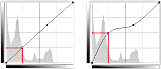
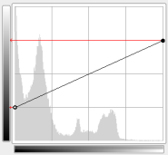
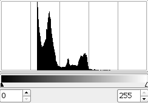
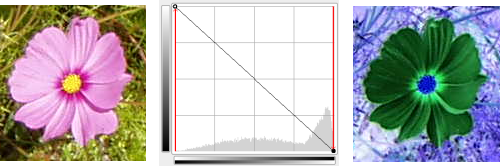
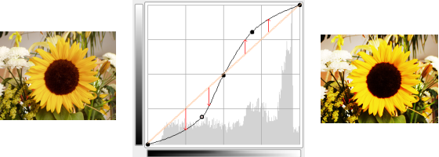

A ferramenta Curvas é a ferramenta mais sofisticada para mudar a cor, brilho, contraste ou transparência da camada ou seleção ativa. Enquanto a ferramenta Níveis lhe permite trabalhar em Sombras e Destaques, a ferramenta Curvas lhe permite trabalhar em qualquer intervalo tonal. Funciona em imagens RGB.
-
You can access this command from the main menu through → .
-
You can also access it by clicking the tool icon in the Toolbox if this tool has been installed there. For this, please refer to Seção 6.13, “Caixa de ferramentas”.

- Predefinições, Opções de Mistura, Preview, Merge filter, Split view
-
![[Nota]](images/note.png)
Nota These options are described in Seção 8.1.2, “Funcionalidades Comuns de Cores”.
- Canal
-
Há cinco opções:
- Valor
-
Esta curva representa o Valor, i.e. o brilho de pixels como pode ser visto na imagem composta.
- Red, Green, Blue
-
A curva representa a quantidade de cor em cada um dos três canais RGB. Aqui, escuro significa pouca cor. Claro significa muita cor.
- Alfa
-
A curva representa a opacidade dos pixels. Escuro significa muito transparente. Claro significa muito opaco. Sua imagem ou camada ativa precisa ter um canal alfa para esta opção estar disponível.
- Redefinir Canal
-
Este botão apaga todas as mudanças feitas ao canal selecionado e o retorna aos valores padrão.
-
 Linear
,
Linear
,
 Non-Linear
,
Non-Linear
,
 Perceptual
Perceptual
-
These three buttons determine whether the tone reproduction (TRC) will be displayed using a linear, non-linear, or perceptual X axis.
-
 Linear histogram
,
Linear histogram
,
 Logarithmic histogram
Logarithmic histogram
-
These two buttons determine whether the histogram will be displayed using a linear or logarithmic Y axis. For images taken from photographs, the linear mode is most commonly useful. For images that contain substantial areas of constant color, though, a linear histogram will often be dominated by a single bar, and a logarithmic histogram will often be more useful.
You can also use the same options in the Tool Options dialog if Curves has been enabled as a tool. This grayed out histogram is not displayed by default.
- Área de Edição Principal
-
-
O gradiente horizontal: ele representa a escala tonal da entrada. Ele também vai de 0 (preto) a 255 (branco), de Sombras a Destaques. Quando você ajusta a curva, ela se divide em duas partes; a parte superior, então, representa o balanço tonal da camada ou seleção.
-
O gradiente vertical: ele representa o destino, a escala tonal da saída. Ele vai de 0 (preto) a 255 (branco), de Sombras a Destaques.
-
O gráfico: A curva é desenhada numa grade e vai do canto inferior esquerdo para o canto superior direito. A posição x/y do cursor é permanentemente exibida na parte superior esquerda da grade. Por padrão esta curva é reta, porque todo nível da entrada corresponde ao mesmo tom de saída. O GIMP automaticamente coloca um ponto em ambas as pontas da curva, para preto (0) e branco (255).
Se você clicar na curva, um novo ponto é criado. Quando o cursor do mouse passa sobre um ponto, ele se transforma numa pequena mão. Você pode clicar e arrastar o ponto para dobrar a curva.
Se você clicar fora da curva, um ponto também é criado, e a curva automaticamente o inclui. Se você clicar enquanto aperta Ctrl fora da curva, a coordenada Y é atraída para a curva original: isto é particularmente útil para adicionar pontos ao longo da curva.
Pontos inativos são brancos. O ponto ativo é preto. Você pode ativar um ponto ao clicar nele. Você também pode alternar a ativação do ponto usando as setas direcionais Esquerda e Direita do seu teclado.
Dois pontos definem um segmento de curva que representa um intervalo tonal na camada. Você pode clicar e arrastar este segmento (o que criará um novo ponto). Logicamente, você não pode arrastar para além dos pontos extremos.
Para mover um ponto, há várias possibilidades para um fino ajuste da posição do ponto:
-
Clique e arraste o ponto.
-
Usar as setas direcionais Cima e Baixo (segurar Shift pressionado lhe permite mover em incrementos de 15 pixels) para mover o ponto verticalmente.
-
Ctrl + click-and-drag allows you to move the point along the curve in its segment, independently of the pointer position.
-
Another way to move point is using the “Input” and “Output” spin buttons: see below.
Para apagar todos os pontos (exceto os dois extremos, que não podem ser removidos), clique no botão . Para apagar somente um ponto, mova-o além de qualquer ponto adjacente horizontalmente.
Enquanto isso, na tela de pintura, o cursor do mouse tem a forma de um conta-gotas. Se você clicar num pixel, uma linha vertical aparece no gráfico, na posição do valor de referência para este pixel no canal selecionado. Se você segurar Shift e clicar, você criará um ponto no canal selecionado. Se você segurar Ctrl e clicar, você criará um ponto em todos os canais, possivelmente incluindo o canal Alfa. Você também pode apertar Shift e arrastar e apertar Ctrl e arrastar: isto moverá a linha vertical e o ponto aparecerá ao soltar o botão esquerdo do mouse.
O histograma da camada ou seleção ativa para o canal selecionado é representado em cinza no gráfico. É apenas uma referência e não é atualizado durante o tratamento.
-
-
- Input, Output
-
Estes botões giratórios permitem definir numérica e precisamente as coordenadas do ponto selecionado caso preciso.
- Tipo
-
Os pontos de controle podem ser ou pontos Suaves (padrão: todos os pontos são suaves) ou Cantos. Estes pontos de canto resultam em ângulos duros. Eles são exibidos por meio de um formato de losango. Você pode alternar entre Suave e Canto para o ponto selecionado.
- Tipo de curva
-
- Suave
-
Esta opção Suave afeta a curva inteira, não apenas o ponto selecionado como acima.
- Mão Livre
-
Com este modo, você pode desenhar à mão livre uma linha que pode ser suavizada clicando no tipo de Curva Suave.
Nós criamos pontos e segmentos na curva e os movemos para moldar a curva. Esta curva mapeia os tons de “entrada” da camada ou seleção ativa para tons de “saída”.
Movendo o ponto um pixel para cima torna este pixel mais claro.

Movendo o ponto para cima
Tornar a curva mais horizontal força todo o intervalo tonal de entrada a ocupar um intervalo tonal de saída reduzido.
O histograma mostra a compressão dos pixels dentro do intervalo de saída. Pixels mais escuros e mais claros desapareceram: o contraste diminui.
Figura 16.139. Tornando a curva mais horizontal

Tornar a curva mais horizontal

O histograma resultante
Mover o ponto extremo superior para a esquerda e o ponto extremo inferior para a direita é o mesmo que mover o botão deslizante branco para a esquerda e o botão deslizante preto para a direita na ferramenta Níveis: todos os pixels cujo valor for superior ao ponto branco (porção achatada da curva) são tornados brancos (mais coloridos/opacos de acordo com o canal selecionado). Todos os pixels cujo valor for inferior ao ponto preto (a curva inferior achatada) são tornados pretos (preto/totalmente transparente). Pixels correspondentes aos pontos da curva que foram movidos para cima ficam mais claros. Pixels correspondentes aos pontos da curva que foram movidos para baixo são tornados mais escuros (setas verdes). Todos estes pixels serão estendidos para o intervalo tonal de saída inteiro.
O histograma mostra a extensão dos valores, de preto (0) a branco (255): contraste é aumentado. Uma vez que o canal Valor foi selecionado, as mudanças afetam todos os canais de cor e as cores se intensificam.
Figura 16.140. Tornando a curva mais vertical

Tornar a curva mais vertical

Resultado e seu histograma

Curva invertida
Preto se torna branco (totalmente colorido/opaco). Branco se torna preto (preto, totalmente transparente). Todos os pixels adotam as cores complementares. Por quê? Porque subtrair os valores do canal de 255 dá a cor complementar. Por exemplo: 19;197;248, um azul celeste, dá 255-19;255-197; 255-248 = 236;58;7, um vermelho forte.

Contraste melhorado
Contraste é melhorado em tons médios porque a curva é mais abrupta aqui. Destaques e Sombras são aumentados mas o contraste é menor nestas áreas porque a curva é mais achatada.